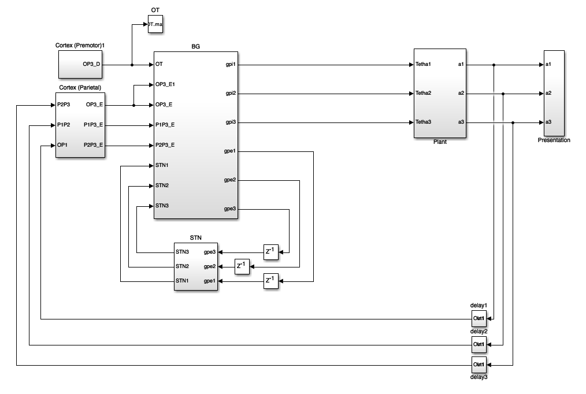
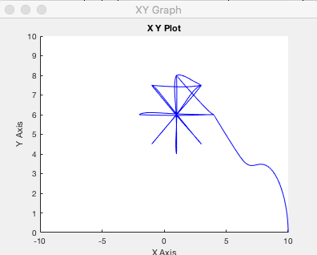
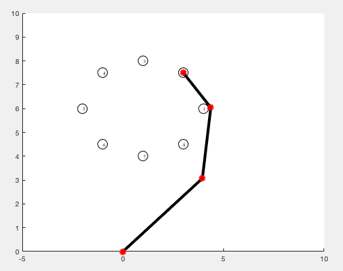
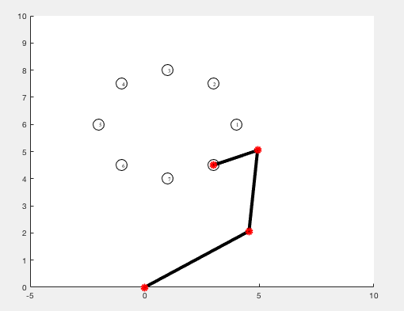
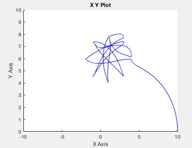

To run simulation:
1- Run 'parameters.m' to load parameters values.
2- Run 'BG.slx' which is the main simulation. Some '*.mat' files are created which contain information on the movements.

Run the simulation (might take a few minutes). This will write results files and generate a figure of healthy arm motion:

3- To see the motions, run 'animation.m'.
You will see the arm move efficiently to locations such as these:


4- To simulate parkinsonian condition, set g in 'parameters.m', lower than 1 and greater than 0.
If you set g = 0.01 for example, and rerun the simulation the arm trajectory graph looks like:

And rerunning the animation displays the deficits in motion (see paper for more).